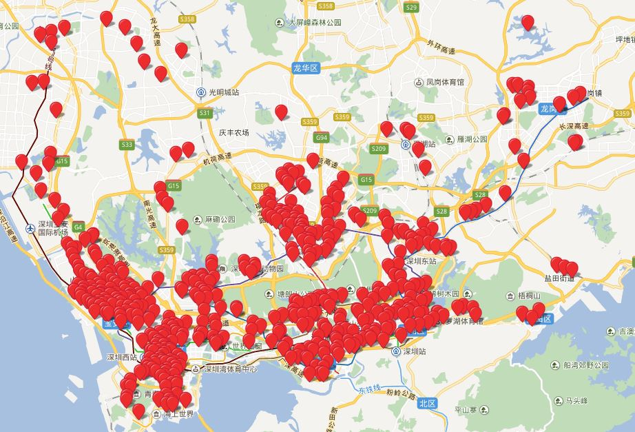
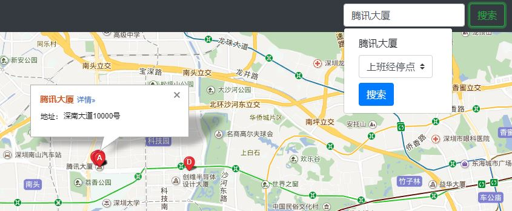
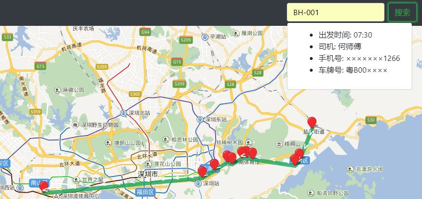

点击左上方的菜单，选择"上班经停点"(或者"下班经停点"、"夜班经停点")，可以看到班车覆盖的地点。点击经停点，可以查看所有经过该点的班车。
在搜索框输入地址，点击搜索，单击检索出来的一个地址，此时在搜索框下面会弹出一个搜索框，点击搜索，即可找出该地址附近的班车经停点。
在搜索框中输入班车的编号(比如BH-001)，点击搜索，即可显示该班车的路线信息。
因为时间原因，没有核对所有地址；下面几个地址在地图上没有具体的位置，显示的时候可能和实际位置有偏差，请结合官方的数据查看。